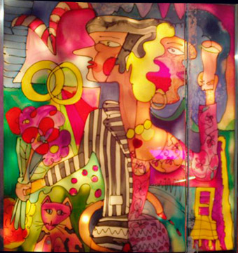

|  |
.......................... SCREENIES
Eine Kooperation von Eva Tauchen und SHIFZ. Screenies sind programmierbare Leucht- und KlangBilder:
Jedes Screeny besitzt Tasten und Regler, mit denen sich das Verhalten ändern lässt;
es können verschiedene Modi aktiviert, die Laut- und Lichtstärke
geregelt oder das Reaktionsverhalten beeinflusst werden. Ein integrierter
Sensor misst Bewegungen im Raum und gibt dem Leuchtbild die Möglichkeit einer Interaktion mit Besuchern. Der Zusammenhang von Licht und Ton wird auf einem PC in einer eigenen Screeny-Programmiersprache
beschrieben bzw. ergibt sich aus der Kombination von Musik- oder Sprachstücken
mit den Lichtsequenzen. |